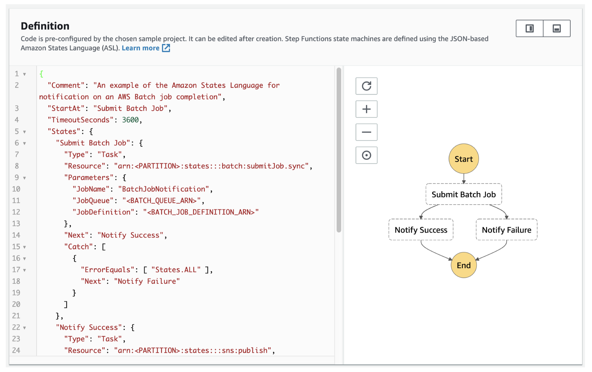

1. Amazon S3Amazon S3 allows you to store objects (files) in "buckets" (directories).Buckets must have a globally unique name.Objects (files) have a key which is the full path<my_bucket>/my_folder/myfile.txtMax object size 5TB.We also have object tags key, value pairs up to 10 useful for security/lifecycle.1.1. S3 for Machine LearningBackbone for many AWS ML services (example: SageMaker)It's also helpful to create a Data Lake. With Data Lake you have:Infinite size, no provisioning99.99999999% durabilityDecoupling of storage (S3) to compute (EC2, Amazon Athena, Amazon Redshift, Spectrum, Amazon Rekognition, AWS Glue).It's centralized architecture i.e. all your data can be in one place.Object Storage supports any file format.Common formats CSV, JSON, Parquet, ORC, Avro, Protobuf1.2. S3 for Data PartitioningPattern for speeding up range queries (e.g. AWS Athena) a service to query data in serverless manner.e.g. You may want to partition by date. This is how you can do it in S3 s3://bucket/my-data-set/year/month/day/hour/data_00.csve.g. query by product s3://bucket/my-data-set/product-id/data_32.csvYou can define whatever partitioning strategy you like.Data partitioning will be handled by some tools we use (e.g. AWS Glue).1.3. How to Create a S3 Bucket?Go to AWS website Services Storage S3 (after customizing the settings) Create Bucket.Once the S3 bucket is created, the rest of it is just like working with a File Explorer (on a cloud) like Google Drive where you can create folders or upload files.
2. Amazon S3 Storage Classes + GlacierThere are different S3 storage classes:Amazon S3 Standard - General PurposeAmazon S3 Standard - Infrequent Access (IA)Amazon S3 One Zone - Infrequent Access (IA)Amazon S3 Glacier Instant RetrievalAmazon S3 Glacier Flexible RetrievalAmazon S3 Glacier Deep ArchiveAmazon S3 Intelligent TieringWhen creating S3: You can choose the class. You can also modify it manually. You can use S3 Lifecycle configurations to move objects automatically between all these storage classes.2.1. S3 Durability and AvailabilityDurabilityDefinition: How many times an object is going to be lost by S3.High durability (99.999999999%, 11 9's) of objects across multiple AZIf you store 10,000,000 objects with S3, you can on average expect to incur a loss of a single object once every 10,000 years.Durability is the same for all storage classes.AvailabilityDefinition: measures how readily available a service is.It depends on the storage class.* S3 Standard has 99.99% availability not available 53 minutes/year2.2. S3 Standard Storage Classes2.2.1. S3 Standard - General Purpose99.99% availabilityUsed for frequently accessed dataLow latency and high throughputSustains two concurrent facility failuresUse cases:Big data analyticsMobile & Gaming applicationsContent distribution2.2.2. S3 Standard - Infrequent Access (Standard-IA)For data that is less frequently accessed, but requires rapid access when needed.Lower cost than S3 Standard99.9% availabilityUse cases:Disaster recoveryBackups2.2.3. S3 One Zone - Infrequent Access (One Zone-IA)High durability (99.999999999%) in a single AZData is lost when AZ is destroyed.99.5% availabilityUse cases:Storing secondary backupsCopies of on-premise dataData you can recreate2.3. S3 Glacier Storage ClassesIt's a low-cost object storage meant for archiving/backupPricing: price for storage + object retrieval cost2.3.1. S3 Glacier Instant RetrievalMilliseconds retrievalGreat for data accessed once a quarterMinimum storage duration is 90 days.2.3.2. S3 Glacier Flexible Retrieval (formerly Amazon S3 Glacier)There are three flexibility here:Expedited (1 to 5 minutes)Standard (3 to 5 hours)Bulk (5 to 12 hours) FREEMinimum storage duration is 90 days.2.3.3. S3 Glacier Deep ArchiveMeant for long-term storage.There are two tiers here:Standard (12 hours)Bulk (48 hours)It has the minimum cost.Minimum storage duration is 180 days.2.4. S3 Intelligent-TieringSmall monthly monitoring and auto-tiering feeMove objects automatically between Access Tiers based on usage patterns.There are no retrieval charges. Different tiers are:Frequent Access Tier (automatic) default tierInfrequent Access Tier (automatic) objects not accessed for 30 daysArchive Instant Access Tier (automatic) objects not accessed for 90 daysArchive Access Tier (optional) configurable from 90 days to 700+ daysDeep Archive Access Tier (optional) configurable from 180 days to 700+ days2.5. S3 Storage Classes Comparison
2.6. Amazon S3 Storage Classes + Glacier Hands OnCreate a Bucket Upload a file Under "Storage Class", you'll get these options:Note: You can edit the Storage Class after you uploaded the file.We can also automate moving objects between different storage classes.In your bucket page, under "Management""Create lifecycle rule"Figure 4 shows an example of these automation rules:
3. Amazon S3 Lifecycle RulesYou can transition objects between storage classes.Moving objects between storage classes can be automated using "Lifecycle Rules".
Figure 5:Transition objects between storage classes
Here are some useful rules:For infrequently accessed objects, move them to "Standard IA".For archive objects that you don't need fast access to, move them to "Glacier" or "Glacier Deep Archive". Lifecycle rules are made up of the following actions (Figure 6):Transition Actions configure objects to transition to another storage class (Figure 4).Expiration Actions configure objects to expire (delete) after some time.* e.g. Access log files can be deleted after a 365 days.* Can be used to delete old versions of files (if versioning is enabled)
Figure 6:Lifecycle actions
Note: Rules can be created for a certain prefixs3://<bucket_namemp3/*Note: Rules can be created for a certain tag (e.g. finance department) Lifecycle rule: Scenario 1Your application on EC2 creates images thumbnails after profile photos are uploaded to Amazon S3. These thumbnails can be easily recreated, and only need to be kept for 60 days. The source images should be able to be immediately retrieved for these 60 days, and afterwards, the user can wait up to 6 hours. How would you design this?* S3 source images can be on Standard, with a lifecycle configuration to transition them to Glacier after 60 days.* S3 thumbnails can be on One-Zone IA, with a lifecycle configuration to expire them (delete them) after 60 days.Lifecycle rule: Scenario 2A rule in your company states that you should be able to recover your deleted S3 objects immediately for 30 days, although this may happen rarely. After this time, and for up to 365 days, deleted objects should be recoverable within 48 hours.* Enable S3 Versioning in order to have object versions, so that deleted objects are in fact hidden by a delete marker and can be recovered.* Transition the non-current versions of the object to Standard IA.* Transition afterwards the non-current versions to Glacier Deep Archive.3.1. Amazon S3 AnalyticsHow do we determine what's the optimal number of days to transition an object from one class to another?Help you decide when to transition objects to the right storage class.Recommendations for Standard and Standard IA.* Does NOT work for One-Zone IA or Glacier.Report is updated daily.* 24 to 48 hours to start seeing data analysis.Good first step to put together Lifecycle Rules (or improve them)!
4. Amazon S3 SecurityThere are 4 methods for encrypting objects in S3:SSE-S3: encrypts S3 objects using keys handled & managed by AWS.SSE-KMS: use AWS Key Management Service to manage encryption keys* Additional security (user must have access to KMS key)* Audit trail for KMS key usage* Here, we can manage our keys, but with SSE-S3 we have no control over the keys, it's just S3 having its own data key.SSE-C: when you want to manage your own encryption keysClient Side EncryptionNote: From an ML perspective, SSE-S3 and SSE-KMS will be most likely used.4.1. SSE-S3
Figure 8:SSE-S3
4.2. SSE-KMS
Figure 9:SSE-KMS
You can find the encryption used for an object from the "Property" tab "default encryption". You can also modify the encryption method there.4.3. S3 SecurityHow do we manage access directly into S3?User-based* IAM policies - which API calls should be allowed for a specific userResource-based* Bucket Policies - bucket wide rules from the S3 console - allows cross account.* Object Access Control List (ACL) finer grain.* Bucket Access Control List (ACL) less common.4.3.1. S3 Bucket PoliciesJSON based policies:Resources: buckets and objectsActions: Set of API to Allow or DenyEffect: Allow/DenyPrincipal: The account or user to apply the policy toUse S3 bucket for policy to:Grant public access to the bucketForce objects to be encrypted at uploadGrant access to another account (Cross Account)4.3.2. S3 Default Encryption vs. Bucket PoliciesThe old way to enable default encryption was to use a bucket policy and refuse any HTTP command without the proper headers:The new way is to use the default encryption option in S3 It basically encrypts every objects that is sent to it.Note:Bucket Policies are evaluated before default encryption.4.4. S3 Security - OtherNetworking -VPC Endpoint Gateway:VPCVirtual Private CloudAllow traffic to stay within your VPC (instead of going through public web)Make sure your private services (AWS SageMaker) can access S3Very important for AWS ML Exam!Logging and Audit:S3 access logs can be stored in other S3 bucketAPI calls can be logged in AWSCloudTrailTagged Based (combined with IAM policies and bucket policies)Example: Add tag Classification=PHI to your objects* PHI Personal Health InformationYou can add tags to an object from PropertiesTags you can set (key, value) pair tags, for example: key=Classification, value=PHI.[Back To Top]
5. AWS KinesisKinesis is a stream service and it's an alternative to Apache Kafka.Great for:Application logs, metrics, IoT, clickstreams.real-time big dataStreaming processing frameworks (Spark, NiFi, etc)Data is automatically replicated synchronously to 3 AZ (Availability Zone).There are four services under the Kinesis umbrella:Kinesis Streams: low latency streaming ingest at scale.Kinesis Analytics: perform real-time analytics on streams using SQL.Kinesis Firehose: load streams into S3, Redshift, ElasticSearch & Splunk.Kinesis Video Streams: meant for streaming video in real-time.5.1. Kinesis ArchitectureA simple Kinesis architecture looks like this:
Figure 10:Kinesis Architecture
5.2. Kinesis StreamsKinesis Streams is great when you want to create real-time streaming applications.Streams are divided in ordered Shards/Partitions.Data retention is 24 hours by default, can go up to 365 days.Ability to reprocess/replay data (because it retains it for at least 24 hrs).Multiple applications can consume the same stream This is great for a Pub/Sub type architecture.Once data is inserted in Kinesis, it cant be deleted (immutability).Records can be up to 1MB in size Kinesis Data Streams is great for use cases where a small amount of data going fast through your stream, but not for petabyte scale batch processing.5.2.1. Kinesis Streams - Capacity ModesFor capacity modes you have two options:Provisioned Mode: * You choose the number of shards provisioned, scale manually or using API.* Each shard gets 1MB/s in (or 1000 records per second).* Each shard gets 2MB/s out (classic or enhanced fan-out consumer).* You pay per shard provisioned per hour.On-Demand Mode:* No need to provision or manage the capacity.* Default capacity provisioned (4 MB/s in or 4000 records per second).* Scales automatically based on observed throughput peak during the last 30 days.* Pay per stream per hour & data in/out per GB.5.2.2. Kinesis Streams LimitationsProducer:1MB/s or 1000 messages/s at write PER SHARD.ProvisionedThroughputException otherwiseConsumer Classic:2MB/s at read PER SHARD across all consumers5 API calls per second PER SHARD across all consumersThis means that the more capacity you want You need to add shards.Data Retention:24 hours data retention by defaultCan be extended to 365 days5.3. Kinesis Data FirehoseFirehose is used to store data into target destinations (It's meant for delivering the data).Firehose reads the data from producers (see below). If we want to transform the record, we could have a Lambda function.Then, Kinesis Data Firehose try to fill a big batch of data to write that data into a target database or a target destination.It writes in batches, not instantaneously.Therefore, it's a near-real-time data service.In terms of destinations, we could have:S3Redshift to write to Redshift, Firehose first writes to S3 and then issue a copy command into Redshift.Amazon ElasticSearchSplunk
Figure 11:Kinesis Data Firehose
Firehose is a fully-managed service, no administration needed.Near Real Time (60 seconds latency minimum for non full batches)Automatic Scaling There's no capacity to create in advance.It supports many data formats Data Conversions from CSV / JSON to Parquet / ORC (only for S3).Data Transformation through AWS Lambda (ex: CSV => JSON)Supports compression when target is Amazon S3 (GZIP, ZIP, and SNAPPY).Pay for the amount of data going through Firehose.
Figure 12:Kinesis Data Firehose in nutshell
5.3.1. Difference between Firehose and Kinesis StreamsStreamsGoing to write custom code (producer / consumer)Real time (~200 ms latency for classic, ~70 ms latency for enhanced fan-out)Automatic scaling with On-demand ModeData Storage for 1 to 365 days, replay capability, multi consumersFirehoseFully managed, send to S3, Splunk, Redshift, ElasticSearchServerless data transformations with LambdaNear real time (lowest buffer time is 1 minute)Automated ScalingNo data storage5.4. Kinesis LabWe want to set up a Kinesis Data Firehose (for data delivery). Search Kinesis in AWS select Kinesis Data Firehose Create delivery streamFor Source, we choose Direct PUT for now, since we haven't set up a Kinesis Data Stream, and besides, Direct PUT is the cheaper option.For Destination, we can choose Amazon S3.Below, you can see all the options when creating a delivery system with Kinesis:
Figure 13:Create Kinesis delivery system
Once the delivery system is created, we can view/modify different things through its console page:
Figure 14:Kinesis Firehose Console
To check if the system works, we can click on Start sending demo data from the Test with demo data section.It will take 60 seconds (Firehose is near real-time) to receive the data in the S3 bucket.They will show up under the "ticker_demo" folder that we set up when creating the delivery system.5.5. Kinesis Data AnalyticsNow that we've on-boarded our data into Kinesis, we may to perform some real time analytics on it For this we can use Kinesis Data Analytics.Kinesis Data Analytics will take the data either from Kinesis Data Streams or Kinesis Data Firehose. performs some stuff in SQL language output can be sent to analytics tools or output destinations.Figure 15 shows how it works:
Figure 15:Kinesis Data Analytics
Use cases:Streaming ETL: select columns, make simple transformations, on streaming dataContinuous metric generation: live leaderboard for a mobile gameResponsive analytics: look for certain criteria and build alerting (filtering)Features:Pay only for resources consumed (but its not cheap)Serverless; scales automaticallyUse IAM permissions to access streaming source and destination(s)SQL or Flink to write the computationSchema discoveryLambda can be used for pre-processing5.5.1. Machine Learning on Kinesis Data AnalyticsThere are two algorithms that you can do directly:RANDOM_CUT_FOREST* SQL function used for anomaly detection on numeric columns in a stream.* This is an algorithm that adapts over time, so it only uses resources recent history to compute the model.* Example: detect anomalous subway ridership during the NYC marathon.HOTSPOTS* Locate and return information about relatively dense regions in your data.* Example: A collection of overheated servers in a data center.5.5.2. Kinesis Data Analytics: LabBefore starting this lab, go to Kinesis Firehose click "start sending demo data".Amazon Kinesis Analytics applications:Streaming applications representing Apache Flink a way more powerful applicationSQL applications We're using this option for this lab, because it's easier and requires less coding This option lets us writing SQL query directly to our Kinesis Firehose streaming data.Studio notebooks This option did not exist when this course was recorded.SQL applicationsCreate SQL application (legacy)
Once we created the application, we need to configure three things:Configure source streamRun real-time analytics with your SQL codeConfigure destinationsConfigure source streamNote: To avoid getting error from "Discover schema", you should be streaming data from Firehose. If not, you'll get an error. * Generally, this may take a few times of getting error to work.
Configure SQLHere, we just choose a SQL from the templates Append SQL to the editorSave and run application* Note: Running application will cost you money. Make sure to stop it when you're done.Once it started running, then we can go and configure the destinations.Configure destinationsConfigure destinationsAdd destinationKinesis Data Firehose delivery streamCreate* We create a new bucket for delivery and storing the analytics.Source Direct PUTDestination Amazon S3* Once we created the new bucket, we're going "Browse" it and set it as destination.
Figure 18:Setting destinations
Real-time analyticsOnce the application started running, we can go to Real-time analytics and check the incoming data.
Figure 19:Kinesis Data Analytics output
5.6. Kinesis Video StreamsProducers:Security camerabody cameraAWS DeepLenssmartphone cameraaudio feedsimagesRADAR dataRTSP cameraVideo playback capability i.e. ability to show the live video to the usersConsumers:build your own (Tensorflow)AWS SageMakerAmazon Rekognition VideoKeep data for 1 hour to 10 years.
5.7. Kinesis SummaryKinesis Data Streams create real-time ML applicationsKinesis Data Firehose ingest massive data near real timeKinesis Data Analytics real-time ETL/ML algorithms on streamsKinesis Video Streams real-time video stream to create ML applications[Back To Top]
6. Glue Data Catalog and CrawlersGlue Data Catalog is a metadata repository for all your tables within your accounts. It'll have the following elements:Automated schema inferenceSchemas are versionedThis metadata repository has integration with Athena or Redshift Spectrum (schema & data discovery).Glue Crawlers can help build the Glue Data Catalog.Crawlers would go around all your data tables, databases, and S3 buckets and figure out what data is there for you.
Figure 21:Glue Data Catalog
6.1. CrawlersCrawlers go through your data to infer schemas and partitions.Works JSON, Parquet, CSV, relational store.Crawlers work for: S3, Amazon Redshift, Amazon RDS.Run the Crawler on a Schedule or On Demand.Need an IAM role/credentials to access the data stores.6.2. Glue and S3 PartitionsGlue crawler will extract partitions based on how your S3 data is organized.Think up front about how you will be querying your data lake in S3.Example: devices send sensor data every hour.Do you query primarily by time ranges?If so, organize your buckets as s3://my-bucket/dataset/yyyy/mm/dd/deviceDo you query primarily by device?If so, organize your buckets as s3://my-bucket/dataset/device/yyyy/mm/dd6.3. Lab: Glue Data CatalogNotes here.6.4. Glue ETLTransform data, Clean Data, Enrich Data (before doing analysis)Generate ETL code in Python or Scala, you can modify the code.Can provide your own Spark or PySpark scripts.Target can be S3, JDBC (RDS, Redshift), or in Glue Data Catalog.Fully managed, cost effective, pay only for the resources consumedJobs are run on a serverless Spark platformGlue Scheduler to schedule the jobs Glue Triggers to automate job runs based on events.6.4.1. Glue ETL - TransformationsBundled Transformations:DropFields, DropNullFields remove (null) fieldsFilter specify a function to filter recordsJoin to enrich dataMap - add fields, delete fields, perform external lookups.Machine Learning Transformations:FindMatches ML:identify duplicate or matching records in your dataset, even when the records do not have a common unique identifier and no fields match exactly.Format conversions: CSV, JSON, Avro, Parquet, ORC, XMLApache Spark transformations (example: K-Means)6.5. Lab: Glue ETLNotes here.6.6. Lab: AthenaNotes here.6.7. Lab: CleanupNotes here.[Back To Top]
7. AWS Data Stores for Machine Learning7.1. RedshiftData Warehousing, SQL analytics (OLAP - Online analytical processing)When you need to run massively parallel SQL queries to perform some analytics, then Redshift is the way to go.Need to load data from S3 to RedshiftUse Redshift Spectrum to query data directly in S3 (no loading)Columnar-based7.2. RDS, AuroraRelational Store, SQL (OLTP Online Transaction Processing)RDS may be used for example if you want to store a little bit of data regarding your model for exports but it will not be used directly for machine learning.Must provision servers in advance.Row-based7.3. DynamoDBNoSQL data storeServerlessProvision read/write capacityUseful to store a machine learning model served by your applicationYou'll not be using it directly for ML but the model output may be stored into DynamoDB.7.4. S3Object storageServerlessInfinite storageIntegration with most AWS Services7.5. OpenSearch (previously ElasticSearch)Indexing of dataSearch amongst data pointsClickstream Analytics7.6. ElastiCacheCaching mechanismNot really used for machine learning[Back To Top]
8. AWS Data PipelineDestinations include: S3RDSDynamoDBRedshift EMRManages task dependenciesRetries and notifies on failuresData sources may be on-premisesHighly available
Figure 22:AWS Data Pipeline
8.1. AWS Data Pipeline vs GlueGlueGlue ETL - Run Apache Spark code, Scala or Python based, focus on the ETL.Glue ETL - Do not worry about configuring or managing the resources.Data Catalog to make the data available to Athena or Redshift Spectrum.Data PipelineOrchestration serviceMore control over the environment, compute resources that run code, & codeAllows access to EC2 or EMR instances (creates resources in your own account)[Back To Top]
9. AWS BatchRun batch jobs as Docker imagesDynamic provisioning of the instances (EC2 & Spot Instances)Optimal quantity and type based on volume and requirementsNo need to manage clusters, fully serverlessYou just pay for the underlying EC2 instancesSchedule Batch Jobs using CloudWatch EventsOrchestrate Batch Jobs using AWS Step Functions9.1. AWS Batch vs GlueGlueGlue ETL - Run Apache Spark code, Scala or Python based, focus on the ETLGlue ETL - Do not worry about configuring or managing the resourcesData Catalog to make the data available to Athena or Redshift SpectrumBatchFor any computing job regardless of the job (must provide Docker image)Resources are created in your account, managed by BatchFor any non-ETL related work, Batch is probably better[Back To Top]
10. DMS Database Migration ServiceQuickly and securely migrate databases to AWS, resilient, self healingThe source database remains available during the migrationSupports:Homogeneous migrations: ex Oracle to OracleHeterogeneous migrations: ex Microsoft SQL Server to AuroraContinuous Data Replication using CDCYou must create an EC2 instance to perform the replication tasks10.1. AWS DMS vs GlueGlueGlue ETL - Run Apache Spark code, Scala or Python based, focus on the ETLGlue ETL - Do not worry about configuring or managing the resourcesData Catalog to make the data available to Athena or Redshift SpectrumAWS DMSContinuous Data ReplicationNo data transformationOnce the data is in AWS, you can use Glue to transform it[Back To Top]
11. AWS Step FunctionsUse to design workflowsEasy visualizationsAdvanced Error Handling and Retry mechanism outside the codeAudit of the history of workflowsAbility to Wait for an arbitrary amount of timeMax execution time of a State Machine is 1 year
Figure 23:Step Functions Examples Train a Machine Learning Mode
Figure 24:Step Functions Examples Tune a Machine Learning Model

Figure 25:Step Functions Examples Manage a Batch Job
12. Full Data Engineering Pipeline Real-Time Layer13. Full Data Engineering Pipeline Video Layer14. Full Data Engineering Pipeline Batch Layer15. Full Data Engineering Pipeline Analytics layer16. AWS DataSyncFor data migrations from on-premises to AWS storage servicesA DataSync Agent is deployed as a VM and connects to your internal storageNFS, SMB, HDFSEncryption and data validation17. MQTTAn Internet of Things (IoT) thingStandard messaging protocolThink of it as how lots of sensor data might get transferred to your machine learning modelThe AWS IoT Device SDK can connect via MQTT.[Back To Top]
18. SummaryHere's a quick summary of all the services we've mentionedAmazon S3: Object Storage for your dataVPC Endpoint Gateway: Privately access your S3 bucket without going through the public internetKinesis Data Streams: real-time data streams, need capacity planning, real-time applicationsKinesis Data Firehose: near real-time data ingestion to S3, Redshift, ElasticSearch, SplunkKinesis Data Analytics: SQL transformations on streaming dataKinesis Video Streams: real-time video feedsGlue Data Catalog & Crawlers: Metadata repositories for schemas and datasets in your accountGlue ETL: ETL Jobs as Spark programs, run on a serverless Spark ClusterDynamoDB: NoSQL storeRedshift: Data Warehousing for OLAP, SQL languageRedshift Spectrum: Redshift on data in S3 (without the need to load it first in Redshift)RDS/Aurora: Relational Data Store for OLTP, SQL languageElasticSearch: index for your data, search capability, clickstream analyticsElastiCache: data cache technologyData Pipelines: Orchestration of ETL jobs between RDS, DynamoDB, S3. Runs on EC2 instancesBatch: batch jobs run as Docker containers - not just for data, manages EC2 instances for youDMS: Database Migration Service, 1-to-1 CDC replication, no ETLStep Functions: Orchestration of workflows, audit, retry mechanismsBriefly mentioned, covered by Frank Kane:EMR: Managed Hadoop ClustersQuicksight: Visualization ToolRekognition: ML ServiceSageMaker: ML ServiceDeepLens: camera by AmazonAthena: Serverless Query of your data